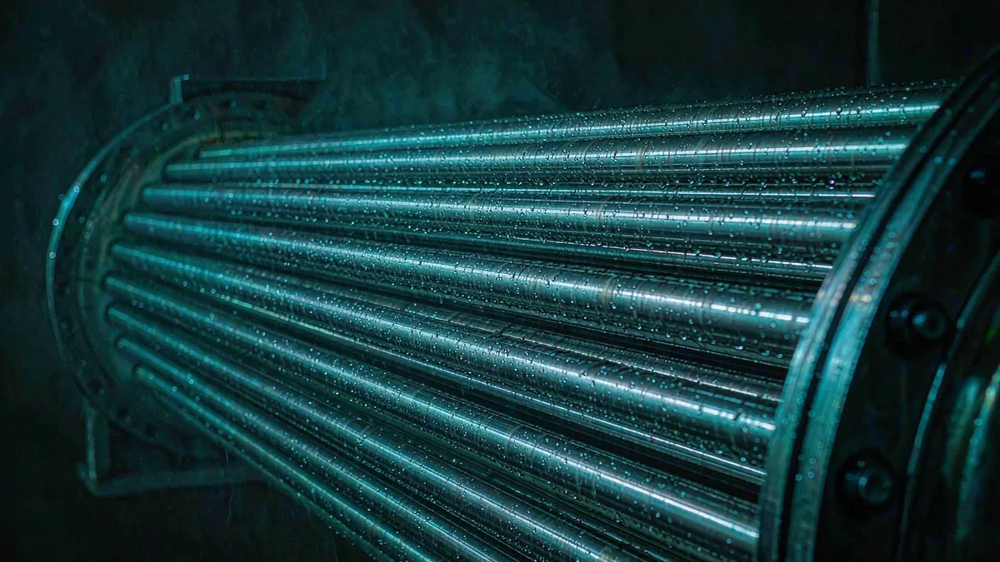

Titanium corrosion resistance by medium
Titanium survives seawater for decades and then pits under a gasket at 80 °C. It handles wet chlorine and ignites in dry chlorine. The medium matters less than the conditions around it.
Titanium's corrosion resistance is not a property of the metal itself. It is a property of a film a few nanometres thick — titanium dioxide — that forms instantly in air or water and repairs itself as long as there is enough oxygen or water at the surface to rebuild it. Everything else follows from that one sentence: where the film can repair, titanium is effectively inert; where it cannot, titanium corrodes like a much less exotic metal, and sometimes faster.
In this guide
How the passive film behaves
The film is stable in oxidising conditions and in neutral aqueous solutions, including chlorides. It is destabilised by reducing conditions, by anhydrous environments where no water is available to repair it, by fluoride ions which dissolve titanium directly, and by sustained hydrogen charging. Temperature accelerates all of it, and so does a crevice, because a crevice consumes the available oxygen and then cannot rebuild the film it has lost.
This is why the same grade can be the correct choice in one plant and a failure in another plant handling the same nominal chemical. Concentration, temperature, aeration, flow and geometry are not secondary details — they are the specification.
Medium-by-medium summary
The ratings below reflect common industrial practice for the three grades most often quoted for corrosive duty. They are a starting point for engineering discussion, not a substitute for corrosion data or a coupon test in the actual medium.
| Medium | Gr.2 (CP) | Gr.7 (Pd) | Gr.12 (Ni-Mo) | Notes |
|---|---|---|---|---|
| Seawater, ambient, flowing | Excellent | Excellent | Excellent | Gasketed joints, not the metal, are the weak point |
| Seawater / brine above ~70 °C | Limited | Good | Good | Crevice attack under deposits and seals |
| Wet chlorine gas | Excellent | Excellent | Excellent | Water must be present |
| Dry chlorine gas | Not recommended | Not recommended | Not recommended | Ignition / pyrophoric reaction risk |
| Sodium hypochlorite | Excellent | Excellent | Excellent | Watch temperature and chlorate content |
| Caustic soda (NaOH) | Excellent | Excellent | Excellent | Hydrogen pickup possible at high temperature |
| Nitric acid, up to ~65% | Excellent | Excellent | Excellent | Oxidising; the film is stable |
| Sulphuric acid, dilute and aerated | Good | Good | Good | Concentrated or hot: not recommended |
| Hydrochloric acid, dilute, ambient | Limited | Good | Good | Concentration and temperature limits are narrow |
| Hydrofluoric acid, any concentration | Not recommended | Not recommended | Not recommended | Dissolves the film and the metal |
| Wet H₂S / sour service | Limited | Limited | Limited | Hydrogen embrittlement, not general corrosion |

Chlorides: the temperature ceiling nobody quotes
Commercially pure titanium is immune to uniform corrosion in seawater at any normal temperature. What limits it is crevice corrosion: under a gasket, a deposit, a lap joint or a tube-to-tubesheet seal, oxygen is consumed faster than it can be replenished, the film cannot repair, and attack starts. The practical threshold quoted in industry guidance is around 70 °C for chlorides; above that, crevice attack becomes the design case rather than an exception.
Two things shift the threshold. Palladium-bearing Gr.7 and the nickel-molybdenum Gr.12 both raise it substantially, which is why desalination and brine heat exchangers increasingly specify them instead of Gr.2. And geometry matters as much as grade: a design that eliminates crevices can survive where a poorly detailed one fails with a more expensive alloy.
Chlorine, hypochlorite and chlor-alkali
Wet chlorine, chlorine dioxide, hypochlorous acid and hypochlorite are all strongly oxidising, and titanium is the standard material for them. This is the basis of titanium's role in chlor-alkali plants: cell components, wet chlorine piping, cooler tube bundles, bleach equipment.
The exception is dry chlorine gas. With no moisture to maintain the film, titanium can react violently — a hazard well known in the industry and the reason dry chlorine service is explicitly excluded rather than rated "poor". If a line can be either wet or dry depending on operation, that is a design question, not a purchasing one.
Nitric, sulphuric and hydrochloric acid
Nitric acid is oxidising, so the film is stable and titanium is excellent up to roughly 65% concentration across normal temperatures. Red fuming nitric acid is a separate case and should not be treated as the same medium.
Sulphuric acid is oxidising when dilute and aerated, and titanium handles it. As concentration and temperature rise the medium becomes reducing, the film destabilises, and attack turns rapid. Dilute, cool, aerated streams are fine; hot concentrated acid is not, and no grade of titanium fixes that.
Hydrochloric acid is the medium where grade choice earns its price. Plain Gr.2 tolerates only dilute acid at ambient temperature, within a narrow window. Palladium (Gr.7) and nickel-molybdenum (Gr.12) shift the potential and extend that window, which is why both are common in pickling lines, chloride leach circuits and acid recovery.
Do not extrapolate from concentration alone. A 3% hydrochloric acid stream at 20 °C and the same stream at 60 °C are different engineering problems. Temperature, aeration and the presence of oxidising ions such as ferric or cupric chloride change the answer more than the percentage does.
Hydrogen embrittlement and cathodic protection
Titanium absorbs hydrogen, and above roughly 150 ppm in the metal the hydride phase makes it brittle. In service this happens in three ways: cathodic protection that over-protects the titanium, galvanic coupling to a less noble metal in an electrolyte, and environments that generate hydrogen at the surface — wet H₂S, acid pickling, and some high-temperature caustic duties.
The practical consequences for a buyer are simple. If the equipment will be cathodically protected, say so — the protection potential has to be controlled and the titanium should not be the cathode of an uncontrolled couple. If the medium is sour, expect the discussion to move from "which grade" to "is titanium appropriate at all". And if the part is pickled or acid-cleaned during fabrication, specify that hydrogen content is checked on the finished item, not just on the mill certificate.
Design details that decide the outcome
- Crevices. Full-penetration welds, no lap joints, no partial welds, gaskets that do not trap liquid. A crevice converts an excellent material into a limited one.
- Flow velocity. Titanium tolerates high velocities in seawater — higher than copper-nickel alloys — but abrupt changes of section and dead legs still cause erosion and deposit attack.
- Galvanic couples. Titanium is cathodic to steel, aluminium, copper alloys and stainless steel. Coupling accelerates attack on the other metal; insulate where it matters.
- Surface condition. Pickled or bright-finished surfaces perform better than as-rolled with embedded iron contamination, which is a common cause of "unexplained" pitting.
- Temperature margin. Design at the maximum excursion, not the normal operating point. A 20 °C excursion above the crevice threshold is where most failures originate.
How to validate a selection
For anything outside well-trodden service, three steps are cheaper than a failure. First, check published isocorrosion data for the actual concentration and temperature, not the nominal acid. Second, run an immersion test to ASTM G31 with both a plain coupon and a crevice assembly, so you learn which mechanism governs. Third, if the equipment is large or the duty is marginal, run a side-stream coupon in the plant for a few months before committing to the alloy.
Where a project is genuinely marginal, the honest answer is often that titanium is the wrong material and a lined steel or higher-alloy option is cheaper over life — that is a conclusion worth reaching before the purchase order, not after.
Engineering guidance only. Ratings here summarise common industrial practice and published data. Corrosion behaviour depends on concentration, temperature, aeration, flow and geometry; final material selection remains the buyer's engineering decision and is confirmed per order.
Corrosion-grade material is supplied as plate, tube and pipe for heat exchangers, bar and forged or machined components. If you send the medium, concentration, temperature and the standard you are working to, we will confirm what is available in Gr.2, Gr.7 or Gr.12.
Need a quote for titanium?
Send the product form, grade, dimensions and destination — we confirm availability, standards and documents before you commit.